Complete user manual
1. Opening the app and navigating

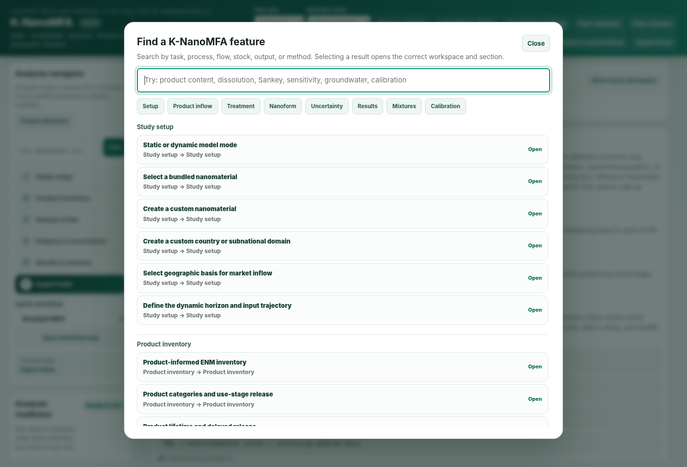
Extract the complete ZIP, then open index.html in Chrome or Edge. Keep the JavaScript, CSS and HTML files together. Moving only the HTML file prevents the calculation and chart files from loading. Normal operation requires neither Node.js nor Python. Calculations use bundled files; literature links require internet access.
Select Compact, Standard or Large under Text size. Compact uses 14 px body text. Text size does not change results. The application interface remains in English when you open the Korean manual.
Use Analysis navigator or Feature directory to locate a function. Select All workspaces under Interface view to expose the complete workspace navigation. On narrow screens, controls stack vertically. Wide tables scroll within their own containers. Focus a long input value and move the text cursor to inspect its full contents.
2. A first calculation

- In Project settings, choose the material, country/domain, reference year and Model mode.
- Check the inflow unit and time boundary. A trial input of 1,000 kg is a scenario assumption unless supported by market data.
- Review product allocation, use-stage releases, treatment processes and end-of-life fractions. Resolve percentage-sum errors before calculation.
- Review water discharge, receiving area, mixing depth and density. Administrative area is not automatically the actual receiving area.
- Run Calculate. Read the mass balance, warnings and units before interpreting concentrations.
- If required, enable Nanoform and 28-state fate, then calculate again.
A successful example run does not establish that its inputs are suitable for your study. Distinguish measured inputs from retained assumptions.
3. Model choices and mass balance
Static MFA allocates flows for the selected period. Dynamic MFA tracks annual inflow, product lifetimes and stocks. Probabilistic calculations repeatedly sample the specified input distributions.
Base MFA PECs, reduced four-compartment fate PECs and 28-state fate PECs are outputs of different models. Identify the model when reporting a concentration.
The system balance is initial stock + cumulative inflow = final stock + cumulative external outflow. Do not add internal transfers again as external losses. A 100% balance demonstrates accounting closure, not agreement with measured environmental concentrations.
Steady-state fate checks stock changes and flow residuals for every state. Sustained input into a state with no external removal path prevents steady state. Increasing the iteration horizon alone cannot resolve that condition.
4. Forms and tracking basis
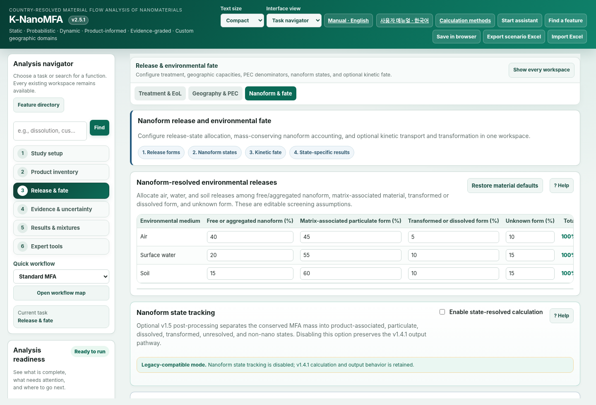
The 28 states combine air, water, soil and sediment with seven forms: matrix-bound, free particle, small aggregate, large aggregate, dissolved, transformed particle and unresolved. These are operational model categories. They do not automatically match analytical size fractions.
Parent-material equivalent expresses mass on the original material basis. Element equivalent expresses its constituent-element mass. For pure ZnO, the Zn fraction is 65.38/81.379. Neither basis automatically represents the complete mass of a newly formed sulfide or coated particle.
Enter initial stocks on the selected basis. Changing the basis or elemental fraction automatically converts existing initial stocks. Do not convert them manually a second time. Imported inflow rows retain their declared tracking_basis and are converted during calculation.
Mixtures, coated particles and uncertain compositions require a documented element and mass fraction. Transformation outside the tracking boundary does not mean elemental mass disappears.
5. Capacities, kinetics and storm events
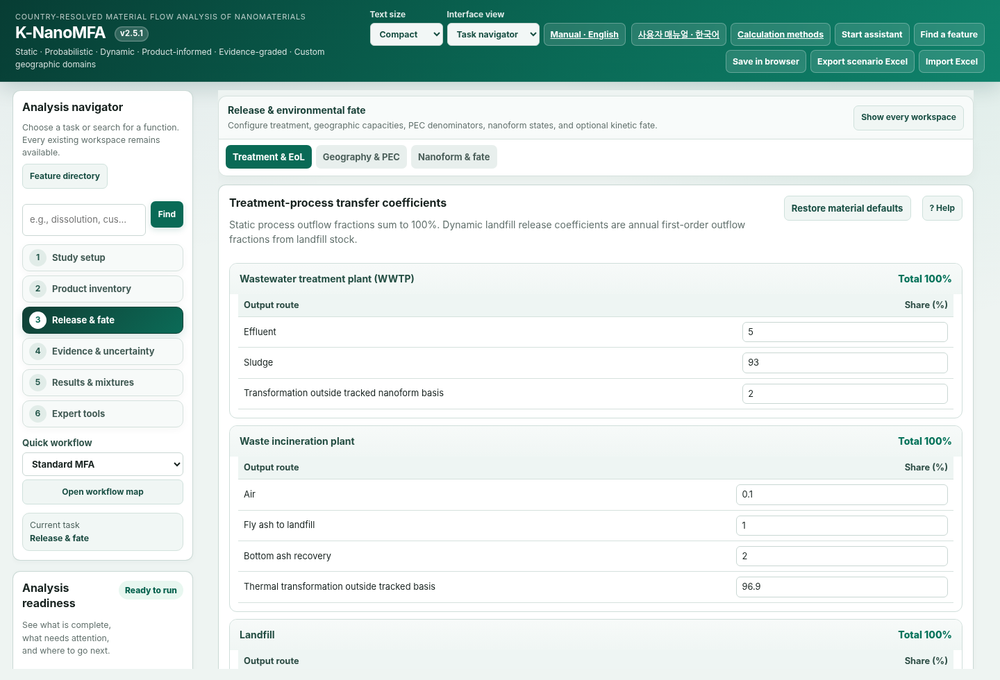
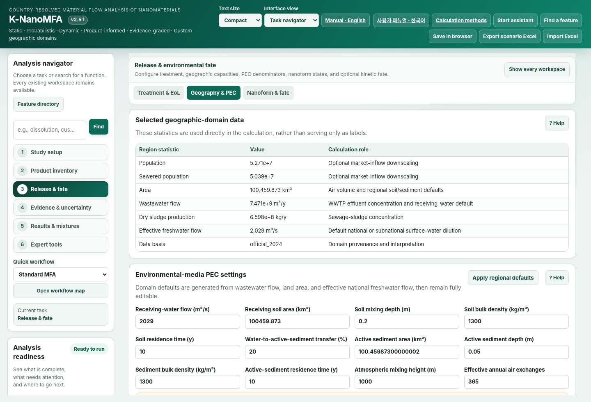
Water volume is discharge Q multiplied by residence time. Default advection uses Q/V. Soil and sediment capacities are receiving area × mixing depth × dry bulk density. Smaller capacity produces a higher PEC for the same stock.
Use Physical rates when diameter, density, viscosity, depth and aggregation inputs are available. Settling uses the Stokes relation for spheres. Applicability to nonspherical particles or real aggregates requires evidence. Dissolution is not automatically predicted from pH, ligands or saturation.
Storms are discrete year-end transfers in dynamic mode. Every transfer uses pre-event stocks. Material newly entering sediment is not resuspended again by that same event. An empty event-year list applies the pulse in every simulated dynamic year.
Overlapping soil-transfer fractions must sum to at most 100%. Storms are unavailable in steady mode. A year-end pulse does not retrospectively change the preceding annual-mean concentration.
6. Importing external annual inflows
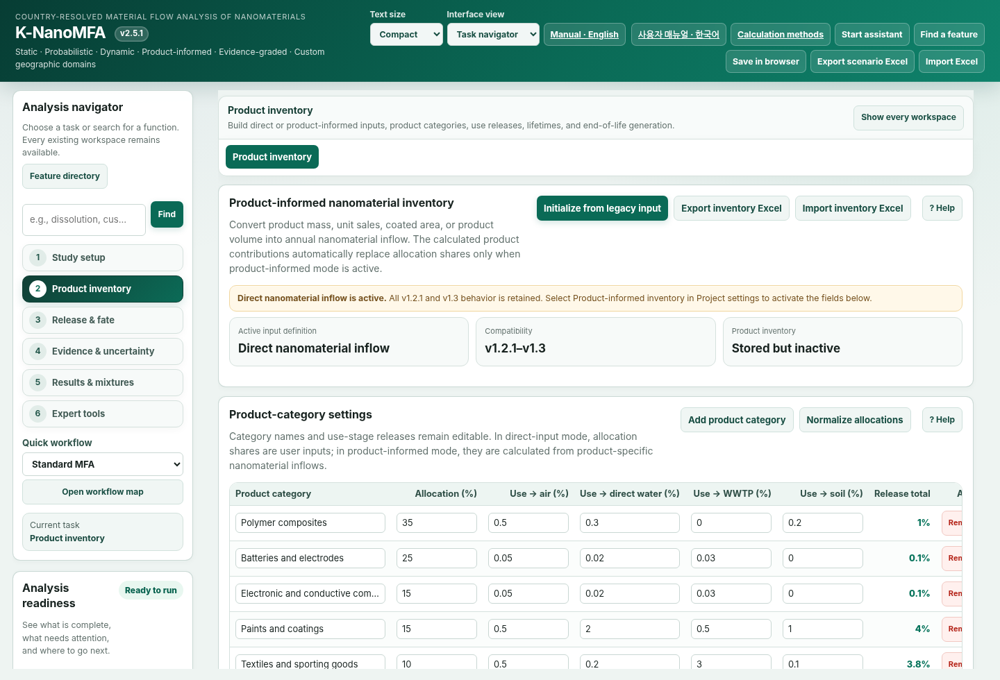
External coupling CSV uses year, compartment, form, mass_kg_y and tracking_basis. Match material and domain_id to the active scenario. Start from the application's exported CSV format.
Missing years are rejected by default. Missing data do not imply zero inflow. Select zero-fill only when zero inflow is justified. A single annual row defaults to a one-year dynamic calculation.
Year end uses the closing stock. Annual mean integrates stock through the year. Do not use these statistics interchangeably when comparing observations. A steady-state request requires constant annual forcing and a converged solution.
7. Recording parameter evidence
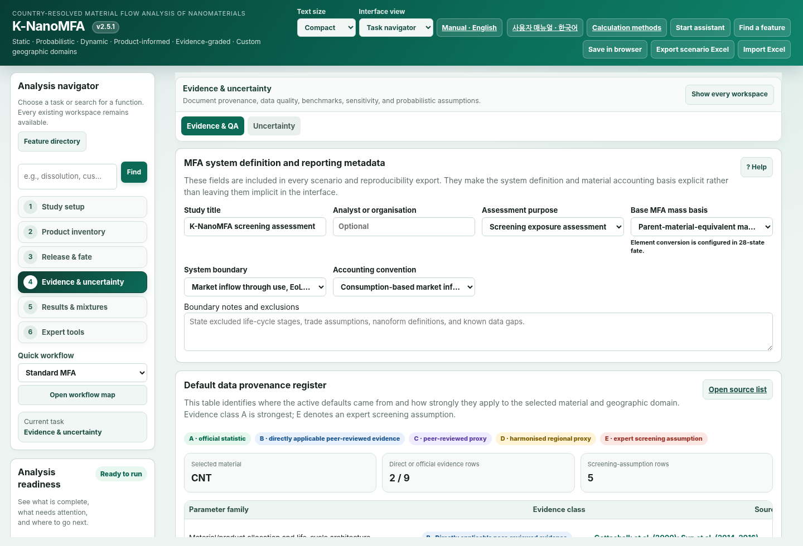
Open Parameter evidence editor under Evidence and numerical qualification. Select a parameter, enter its evidence type, source, material, domain ID, unit, applicable years/range and conditions, then select Save parameter evidence.
Measured denotes a measured input. Published proxy denotes a literature-derived proxy. Calibrated denotes a fitted input. Retain Screening assumption when evidence is absent. Record the relevant table, equation and conditions in addition to a DOI or report title.
Internal soil-area units are ha; rate units are 1/year. The audit flags unit and applicability mismatches. Registering a source does not certify that source or its suitability for your site.
Rate CV override changes the coefficient of variation used for that kinetic parameter. Min/max document applicability; they do not truncate Monte Carlo samples.
8. Comparing observations and qualifying validation
Use Template CSV or enter rows in Observed concentration comparison. Match material, domain, model_source, medium, form, tracking_basis, statistic, year, observed value, unit, role and source. Soil, sediment and sludge require dry-weight concentration units.
Independent-validation qualification also requires dataset_id, analytical_method, sampling_period, background_treatment, measurand_scope and independence. Register IDs used for fitting under Calibration dataset IDs. Matching IDs cannot count as independent validation.
Use full_year for annual means, year_end for closing-year values and steady_representative for steady observations. Select engineered_material and independent only when supported by evidence. Total metal containing natural background does not automatically match engineered-material PEC.
After Compare, inspect matched rows and exclusion reasons. Interpret RMSE and bias within comparable endpoints. Censored measurements are excluded rather than replaced with half a detection limit. Incomplete metadata may permit diagnostic comparison while disqualifying the independent-validation count.
9. Sensitivity and uncertainty
Run fate sensitivity varies individual rates and capacities by ±20% and reports PEC changes. Upstream MFA emissions remain fixed. Zero-valued inputs are excluded from multiplicative perturbations. This is local sensitivity, not global sensitivity or an interaction analysis.
Kinetic-only varies rates. Linked also varies supported inflow, process, environmental and form-allocation inputs. External coupling preserves imported form proportions while varying mass scale. Stock-driven linked fate uncertainty is not supported.
Repeatability workloads are Quick 50/100/200, Research 500/1000/2000 and Extended 1000/2000/5000 draws. Enter two to five distinct seeds. The default 10% threshold is a numerical criterion selected by the user, not a permitted field-prediction error.
P5–P95 is a conditional 90% simulation interval. It is not an empirically validated prediction interval. If repeatability fails, review sample size, input distributions and convergence. Passing the bundled v2.5.0 test scenario does not certify your current scenario.
10. Saving, restoring and troubleshooting
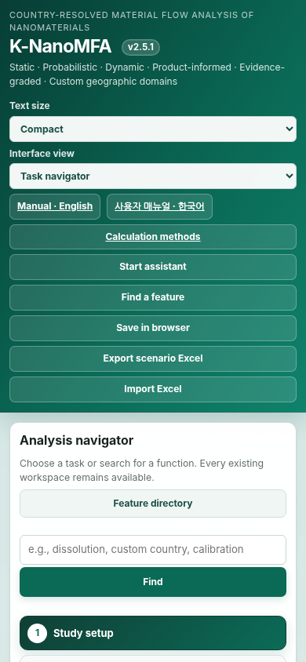
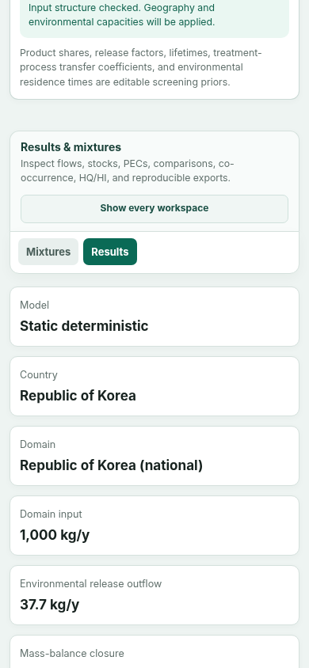

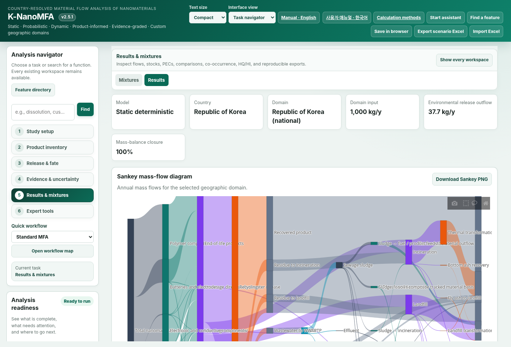
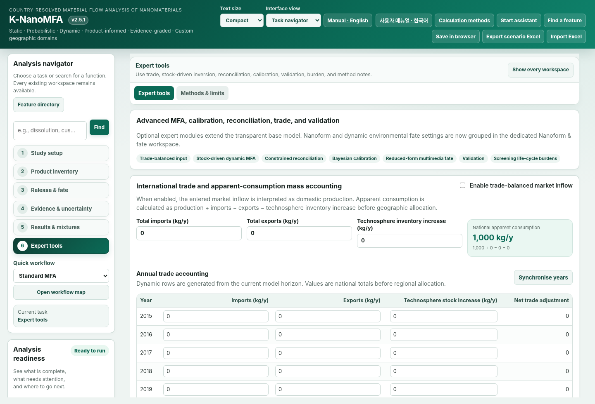
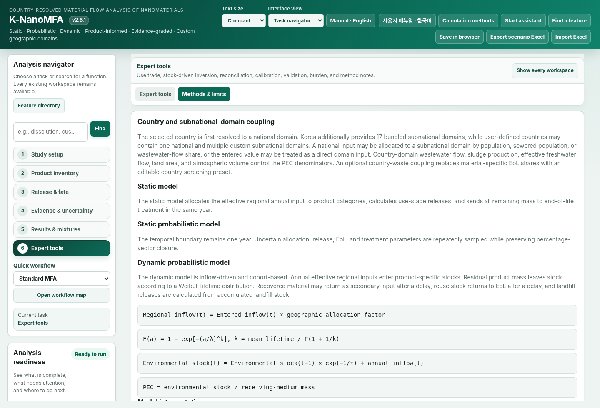
Export scenario Excel saves inputs. The results reproducibility package includes outputs, evidence, observation comparison and current diagnostics. Export diagnostics Excel saves sensitivity and repeatability separately. Recalculate after changing inputs.
Save in browser and autosave depend on the current browser's storage. Clearing browser data or changing computers may remove access. Use exported Excel files for durable records.
| Problem | What to check |
|---|---|
| Empty chart | Extract the complete ZIP and run Calculate. Open the results tab and resize the window. |
| No steady convergence | Inspect continuous inputs, removal paths and retained states. Use dynamic results when removal is physically absent. |
| Observation excluded | Read the exclusion reason. Check medium, form, basis, year, statistic and dry-weight units. |
| Clipped text | Check browser zoom at 100% and Text size. Use horizontal scrolling inside wide tables. |
Verification scope:Actual browser charts and mobile rendering could not be verified in the build environment because local-file access was blocked. Source/event checks are distinct from rendered-screen verification. See the methods and published-data applicability check for scientific boundaries.